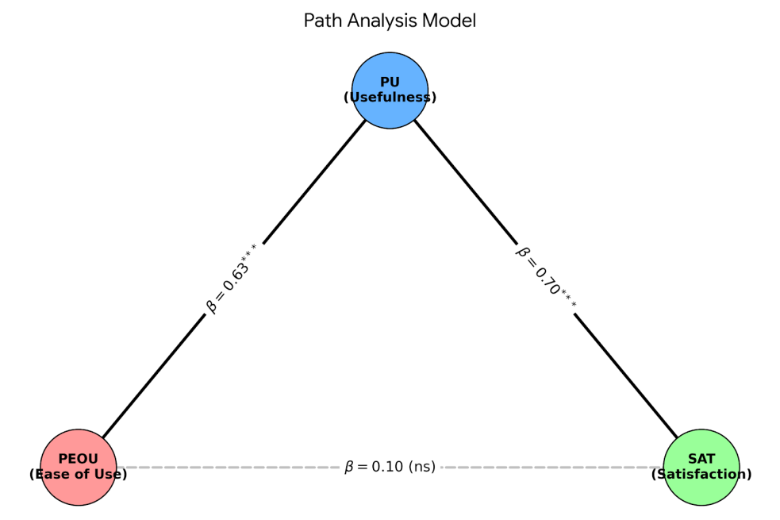
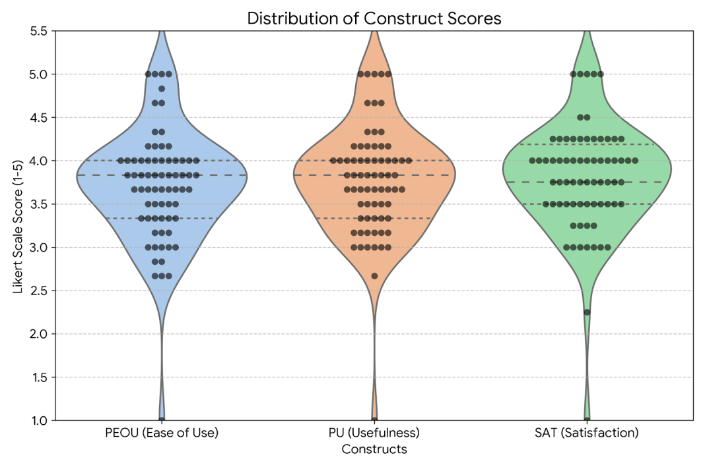

Satisfaction and Needs Analysis of a Generative AI Automated Scoring and Feedback System
Author: Yu-Ting Shih
Overview
As Generative Artificial Intelligence (AI) technology matures, automated grading and feedback sys tems have become crucial tools for reducing teacher workload and providing person…
Key Points
- Background: As Generative Artificial Intelligence (AI) technology matures, automated grading and feedback sys tems have become crucial tools for reducing teacher workload and providing person…
- Method: The study presents a clear research design that can support further work in educational technology and AI-supported learning.
- Findings: The article highlights the value and applicability of AI-related approaches in educational and learning contexts.
- Significance: Relevant themes for follow-up discussion include: Generative AI, Automated Scoring System, AI Persona.
Keywords
Generative AI, Automated Scoring System, AI Persona
Summary
As Generative Artificial Intelligence (AI) technology matures, automated grading and feedback sys tems have become crucial tools for reducing teacher workload and providing personalized learning guidance. This study investigated the effectiveness of a self-designed "Generative AI Automated G rading and Feedback System" implemented in a "Data Science and Problem Solving" course for un iversity freshmen. Based on the Technology Acceptance Model (TAM), this mixed -methods study collected 70 valid responses to analyze the relationships among Perceived Ease of Use (PEOU), Pe rceived Usefulness (PU), and overall Satisfaction (SAT), alongside students' specific lea rning pain points. Path analysis results revealed that PU completely mediated the relationship between PEOU and SAT (β = .70, p < .001), demonstrating that the system's actual ability to improve report qualit y is the core determinant of student satisfaction, rather than mere interface intuitiveness. Furthermo re, qualitative them…
Extracted Figures

